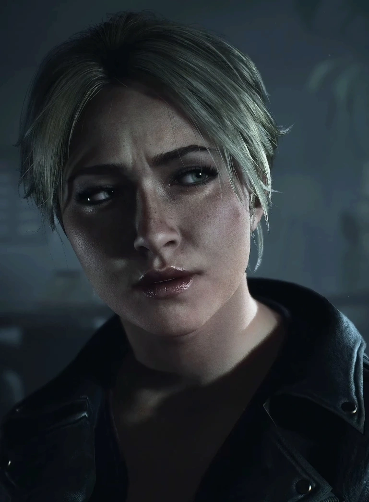

Sam is the only friend to not participate in Hannah's prank, but is still inactive in protecting Hannah. While Sam isnt participating, her inaction is still problematic and shows room for growth.
Sam is the first person we're reintroduced to, with her being the expository caracter of the game. We mostly follow her viewpoint as everyone is gradually reintroduced. When Emily and Jess get into their fight, Sam once again shows her inaction, avoiding the confrentation by taking a particularly well-timed bath.
Sam takes a bath.
Sam emerges as the second main character in the latter half of the game. Once she is done with her bath, she gets up to an empty house, and walks around before her encounter with Josh, whose disguised as the killer. After this, Sam reconvenes with Mike, Ashley, and Chris. They all decide to tie up Josh outside and wait out the night. They end up finding Emily when she comes back to the house, before leading everyone to the mines to reconvene before initiating the final scene of the game.
Sam is by far the most morally good character of the game, and battles her inaction as she steps up to the plate, becoming a leader for the group. I find her slightly boring compared to all the other personalities of the cast, but her groundedness is extremely refreshing and needed.
Sam's Score: 9/10
